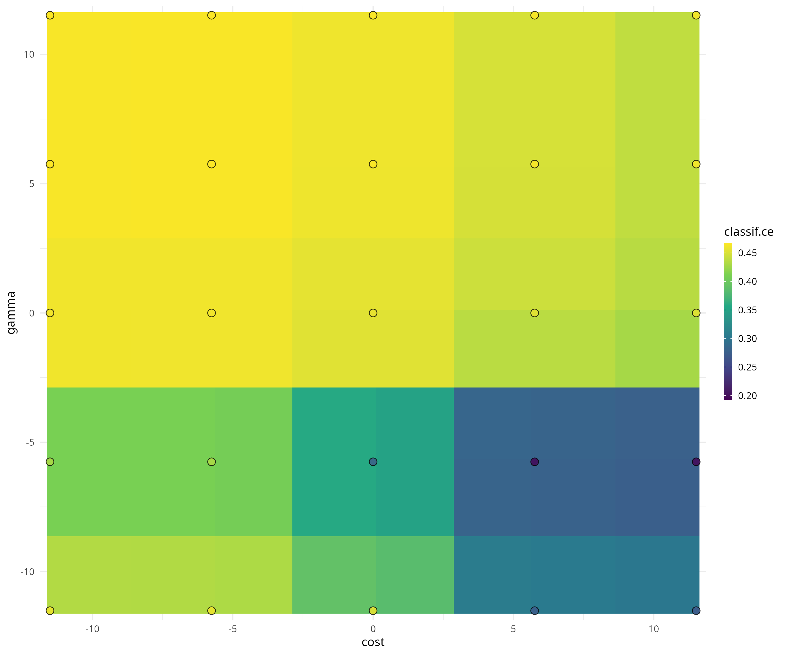

Package website: release | dev
mlr3tuning is the hyperparameter optimization package of the mlr3 ecosystem. It features highly configurable search spaces via the paradox package and finds optimal hyperparameter configurations for any mlr3 learner. mlr3tuning works with several optimization algorithms e.g. Random Search, Iterated Racing, Bayesian Optimization (in mlr3mbo) and Hyperband (in mlr3hyperband). Moreover, it can automatically optimize learners and estimate the performance of optimized models with nested resampling. The package is built on the optimization framework bbotk.
Extension packages
mlr3tuning is extended by the following packages.
- mlr3tuningspaces is a collection of search spaces from scientific articles for commonly used learners.
- mlr3hyperband adds the Hyperband and Successive Halving algorithm.
- mlr3mbo adds Bayesian Optimization methods.
Resources
There are several sections about hyperparameter optimization in the mlr3book.
- Getting started with hyperparameter optimization.
- Tune a support vector machine on the Sonar data set.
- Learn about tuning spaces.
- Estimate the model performance with nested resampling.
- Learn about multi-objective optimization.
The gallery features a collection of case studies and demos about optimization.
- Learn more advanced methods with the Practical Tuning Series.
- Optimize an rpart classification tree with only a few lines of code.
- Simultaneously optimize hyperparameters and use early stopping with XGBoost.
- Make us of proven search space.
- Learn about hotstarting models.
- Run the default hyperparameter configuration of learners as a baseline.
- Use the Hyperband optimizer with different budget parameters.
The cheatsheet summarizes the most important functions of mlr3tuning.
Installation
Install the last release from CRAN:
install.packages("mlr3tuning")Install the development version from GitHub:
remotes::install_github("mlr-org/mlr3tuning")Examples
We optimize the cost and gamma hyperparameters of a support vector machine on the Sonar data set.
library("mlr3verse")
learner = lrn("classif.svm",
cost = to_tune(1e-5, 1e5, logscale = TRUE),
gamma = to_tune(1e-5, 1e5, logscale = TRUE),
kernel = "radial",
type = "C-classification"
)We construct a tuning instance with the ti() function. The tuning instance describes the tuning problem.
instance = ti(
task = tsk("sonar"),
learner = learner,
resampling = rsmp("cv", folds = 3),
measures = msr("classif.ce"),
terminator = trm("none")
)
instance## <TuningInstanceSingleCrit>
## * State: Not optimized
## * Objective: <ObjectiveTuning:classif.svm_on_sonar>
## * Search Space:
## id class lower upper nlevels
## 1: cost ParamDbl -11.51293 11.51293 Inf
## 2: gamma ParamDbl -11.51293 11.51293 Inf
## * Terminator: <TerminatorNone>We select a simple grid search as the optimization algorithm.
tuner = tnr("grid_search", resolution = 5)
tuner## <TunerGridSearch>: Grid Search
## * Parameters: resolution=5, batch_size=1
## * Parameter classes: ParamLgl, ParamInt, ParamDbl, ParamFct
## * Properties: dependencies, single-crit, multi-crit
## * Packages: mlr3tuningTo start the tuning, we simply pass the tuning instance to the tuner.
tuner$optimize(instance)## cost gamma learner_param_vals x_domain classif.ce
## 1: 5.756463 -5.756463 <list[4]> <list[2]> 0.1637681The tuner returns the best hyperparameter configuration and the corresponding measured performance.
The archive contains all evaluated hyperparameter configurations.
as.data.table(instance$archive)[, .(cost, gamma, classif.ce, batch_nr, resample_result)]## cost gamma classif.ce batch_nr resample_result
## 1: -5.756463 5.756463 0.4665977 1 <ResampleResult[21]>
## 2: 5.756463 -5.756463 0.1637681 2 <ResampleResult[21]>
## 3: 11.512925 5.756463 0.4665977 3 <ResampleResult[21]>
## 4: 5.756463 11.512925 0.4665977 4 <ResampleResult[21]>
## 5: -11.512925 -11.512925 0.4665977 5 <ResampleResult[21]>
## ---
## 21: -5.756463 -5.756463 0.4665977 21 <ResampleResult[21]>
## 22: 11.512925 11.512925 0.4665977 22 <ResampleResult[21]>
## 23: -11.512925 11.512925 0.4665977 23 <ResampleResult[21]>
## 24: 11.512925 -5.756463 0.1637681 24 <ResampleResult[21]>
## 25: 0.000000 -5.756463 0.2599034 25 <ResampleResult[21]>The mlr3viz package visualizes tuning results.

We fit a final model with optimized hyperparameters to make predictions on new data.
learner$param_set$values = instance$result_learner_param_vals
learner$train(tsk("sonar"))